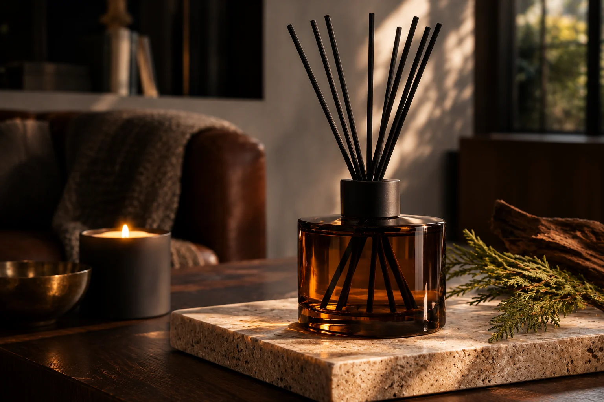

PERSONAL / VERSATILE
Bleu de Chanel EDP
Polished and adaptable. A considered everyday starting point.
Read fragrance profile ↗Independent guides, considered recommendations, and smarter ways to shop for what you wear—and how you live.
Find your signature fragrance, sample before buying, or explore a more affordable alternative.
Explore personal fragrance ↗
Bring considered scent to the rooms you live and work in.
Explore home fragrance ↗Two ways to wear fragrance. Two ways to bring it home.
Some shopping links are affiliate links. Amazon links open search results; confirm the product and seller before purchasing. Scent Split links are not yet affiliate tracked.
Polished and adaptable. A considered everyday starting point.
Read fragrance profile ↗
A fruit-and-wood signature worth sampling before committing.
Read fragrance profile ↗Explore wax, fragrance families and burn-time considerations before choosing.
Category guide · not a tested product ranking
Find a low-maintenance way to scent an entryway, bedroom or office.
Category guide · not a tested product ranking PERSONAL / THE WARDROBE
PERSONAL / THE WARDROBEBuild a useful rotation without collecting twenty bottles.
HOME / CANDLESFind the right style, fragrance and format.
PERSONAL / THE GUIDEMake a confident choice before buying a bottle.
HOME / DIFFUSERSUnderstand formats, upkeep and placement.
 HOME / ROOM BY ROOM
HOME / ROOM BY ROOMA room-by-room approach to choosing fragrance.